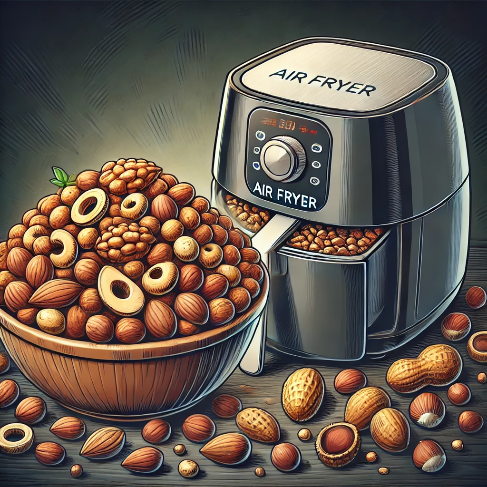

Best Air Fryer for Healthy Snacks
Air fryers are a great tool for making healthy snacks at home. They allow you to enjoy crispy, delicious treats with less oil than traditional frying methods. Whether you're craving chips, roasted nuts, or vegetable fries, an air fryer can help you create nutritious snacks quickly and easily. Here are some of the best air fryers for making healthy snacks, chosen for their efficiency, versatility, and ease of use.
1. Ninja Air Fryer AF101 4-Quart
Key Features:
- 4-Quart Capacity: Perfect for small to medium-sized batches.
- Wide Temperature Range: From 105°F to 400°F, allowing for both dehydration and frying.
- Dishwasher-Safe Parts: Easy to clean basket and crisper plate.
Why It's Great for Healthy Snacks:
The Ninja Air Fryer AF101 is versatile and easy to use, making it perfect for preparing a variety of healthy snacks. Its dehydration function is great for making fruit chips and veggie crisps.
2. COSORI Air Fryer Max XL 5.8-Quart
Key Features:
- 5.8-Quart Capacity: Ideal for larger batches of snacks.
- 11 Preset Functions: Includes options for vegetables, root vegetables, and more.
- Non-Stick Basket: Easy to clean and maintain.
Why It's Great for Healthy Snacks:
The COSORI Air Fryer Max XL’s large capacity and preset functions make it easy to prepare a wide range of healthy snacks. The non-stick basket ensures that cleanup is a breeze.
3. Instant Vortex Plus 6-in-1 Air Fryer 6-Quart
Key Features:
- 6-in-1 Functionality: Air fry, bake, roast, toast, broil, and dehydrate.
- EvenCrisp Technology: Ensures perfect crispiness every time.
- Large Capacity: Fits a variety of foods, making it great for snacks.
Why It's Great for Healthy Snacks:
The Instant Vortex Plus’s EvenCrisp Technology and large capacity make it perfect for making crispy and healthy snacks. Its multiple functions add versatility to your snack-making options.
4. GoWISE USA GW22956 7-Quart Electric Air Fryer
Key Features:
- 7-Quart Capacity: Suitable for large batches and meal prep.
- 8 Cooking Presets: Includes options for vegetables and dehydrating.
- Rapid Air Technology: Cooks food evenly and quickly.
Why It's Great for Healthy Snacks:
The GoWISE USA 7-Quart Air Fryer’s large capacity and preset functions make it easy to prepare large quantities of healthy snacks. Its rapid air technology ensures even cooking for consistent results.
5. Philips Premium Airfryer XXL
Key Features:
- Fat Removal Technology: Reduces and captures excess fat.
- Rapid Air Technology: Ensures even cooking and crispiness.
- Extra Large Capacity: Fits a whole meal, including large portions.
Why It's Great for Healthy Snacks:
The Philips Premium Airfryer XXL’s advanced technology ensures your snacks are healthy and delicious. Its large capacity is perfect for preparing big batches of your favorite snacks.
Conclusion
Making healthy snacks at home is easy with the right air fryer. The models listed above offer excellent features and capacities to ensure your snacks are crispy, delicious, and nutritious every time. Whether you’re preparing snacks for yourself, your family, or a party, these air fryers will help you create healthy treats with ease.